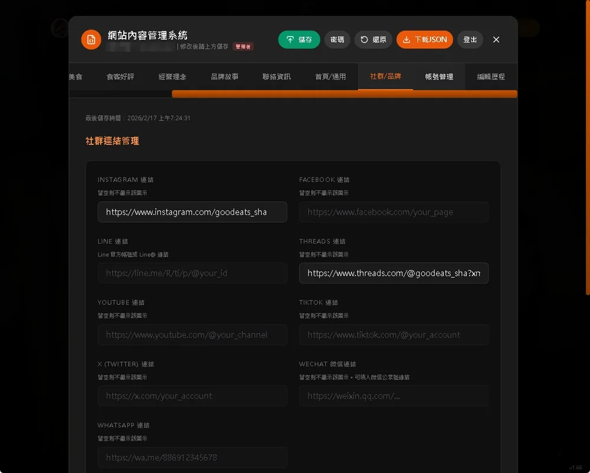
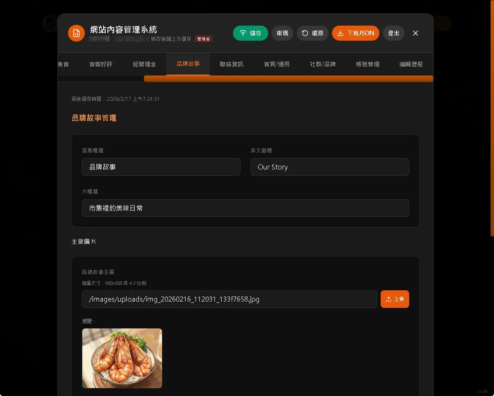
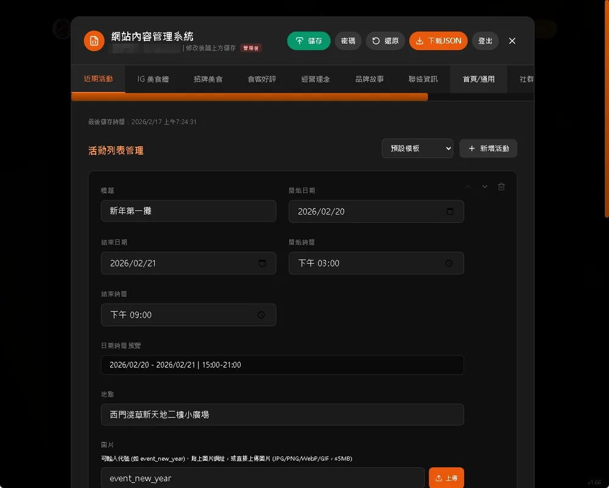
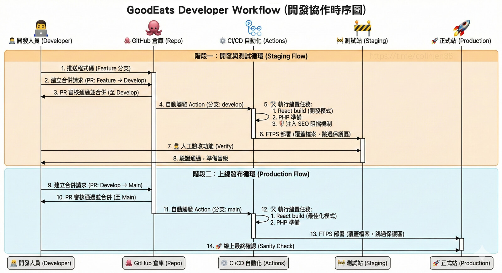
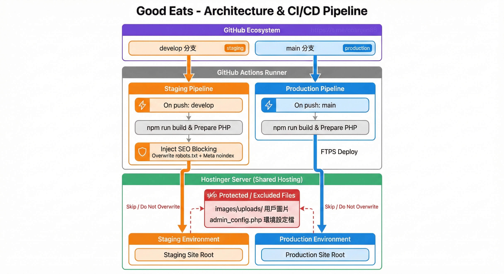

Good Eats 穀意 - 專案技術展示
<Code
Architecture />
新鮮在食材
Code the Core
// Headless Architecture
// React 18 + PHP API
// Secure & Fast
THE
KITCHEN.
選用合適的技術堆疊，
確保穩定的效能表現。
React 18
Concurrent Mode + Vite 高效渲染
Fast
Refresh
Tailwind
CSS
Framer
Motion
Backend
輕量級 API 架構
<?php
return $json_data;
?>
JSON CMS
無資料庫架構
Flat-file 快速讀取
CI/CD Pipeline
GitHub Actions 自動化部署
Backend Management
ADMIN CMS
自行研發的 Flat-file 內容管理系統，
無需資料庫，即可實現視覺化的網站內容編輯。
goodeats.asia/admin



Admin Dashboard — 社群/品牌管理介面
Content
Management
視覺化後台管理
Flat-file CMS
無資料庫架構
透過自行開發的後台管理介面，店家可直接編輯網站所有內容，包括品牌資訊、社群連結、招牌美食、活動公告等，所有資料以 JSON 檔案儲存，無需傳統資料庫。
區塊化視覺編輯
以 Tab 分頁管理不同區塊：近期活動、招牌美食、食客好評、經營理念、聯絡資訊、社群品牌，所見即所得。
圖片上傳與管理
驗證真實檔案類型 (MIME Type) 並強制重命名，防止惡意寫入，且部署時保留圖檔。
安全防護機制
實作 Admin/Editor 分級權限 (RBAC)，結合自我保護機制與 CSRF 防禦，確保後台安全。
草稿自動救援
編輯時自動備份歷史版本，並實作樂觀鎖 (Optimistic Locking) 機制，防止多人協作時的資料覆蓋。
PHP
API
JSON
Storage
CSRF
Protection
bcrypt
Versioning
Engineering Deep Dive
SYSTEM ARCHITECTURE
從 Flat-file CMS 架構到 CI/CD 自動化部署，
介紹系統設計的流程與細節。

Developer Workflow Diagram
DevOps
Workflow
標準化 DevOps 工作流
雙階段驗證機制
(Dual-Stage Verification)
本專案區分「開發測試 (Staging)」與「上線發布 (Production)」環境。功能需在測試站驗證後，再部署至正式站，以降低上線風險。
自動化 CI/CD 整合
使用 GitHub Actions 建置流水線。包含程式碼合併、前端建置與 FTPS 部署，透過自動化流程提升交付效率。
品質與安全控管
透過 Pull Request (PR) 審核程式碼，並在測試階段加入 SEO 阻擋機制，避免測試內容公開。
DevOps
CI/CD 自動化
部署流程
導入標準 Git Flow 開發流程，配合 GitHub Actions 實現全自動化部署，從程式碼提交到上線一鍵完成。
Deployment Pipeline
Dev
Staging
Main
Production
Staging 測試站
自動注入 noindex
防止 SEO 污染。
Production 正式站
嚴格的部署保護與權限控管，自動排除敏感設定檔。

CI/CD Pipeline Architecture
KEY FEATURES
網站功能特點與技術細節
視覺體驗
結合影片背景與 Canvas 粒子特效，豐富視覺層次
效能分級
偵測裝置效能自動調整特效等級，確保流暢體驗
輕量動畫
使用 Lottie 向量動畫，兼顧品質與載入速度
權限管理
實作分級權限 (RBAC) 與自我保護機制，嚴謹控管存取
資料完整性
具備樂觀鎖控制與自動版本備份，防止編輯衝突
動態版面
支援社群內容自適應排列，並透過設定檔驅動版面
在地 SEO
整合 Restaurant JSON-LD 結構化資料，針對台南美食搜尋
系統安全
驗證檔案真實類型並防止路徑遍歷，結合 CSRF 防禦
自動化維運
測試站自動阻擋索引，並整合 Server-side 清除快取機制
DEV LOG
開發歷程記錄
v3.0 - 系統架構完整展示
新增 Architecture & DevOps 專區，整合 Flat-file CMS 機制與 CI/CD Pipeline 視覺化圖表
v2.5 - CI/CD 流程完善
建立 Branch Protection Rules，優化 Staging/Production 部署腳本
v2.4 - 自動化部署實作
完成 GitHub Actions 與 Hostinger FTPS 的串接，實現 Push-to-Deploy
v2.2 - Admin UI 優化
重構後台介面，新增「聯絡資訊」、「經營理念」的可編輯區塊
v2.1 - SEO優化
新增SEO標籤、描述與Schema
v2.0 - 建立簡易後台
建立基本後台，可編輯首頁、關於我們、服務項目
v1.8 - Loading 體驗升級
導入 Lottie 動畫與 CSS Steam Loading 效果 問題
v1.6 - 視覺大改版
確立 Dark Theme 與 Glassmorphism 設計語言，實作全螢幕影片背景
v1.5 - 粒子效果
新增粒子效果與效調
v1.2 - 視覺優化‧自適應調整
v1.0 - 初期上線
基礎 CMS 功能完成，React 前端架構定型